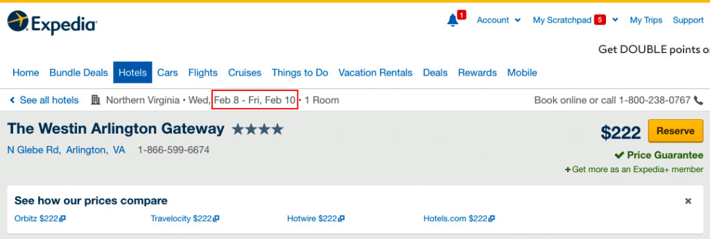
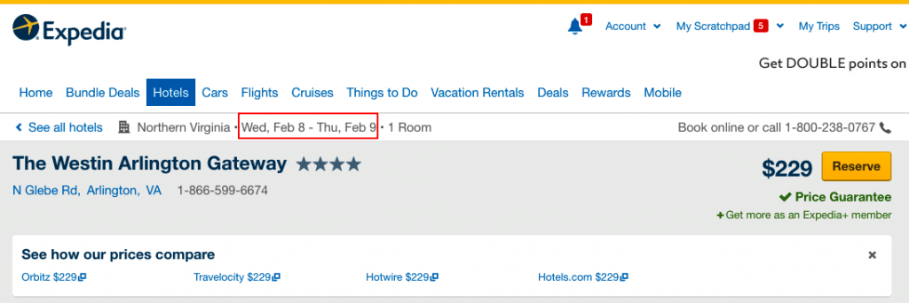
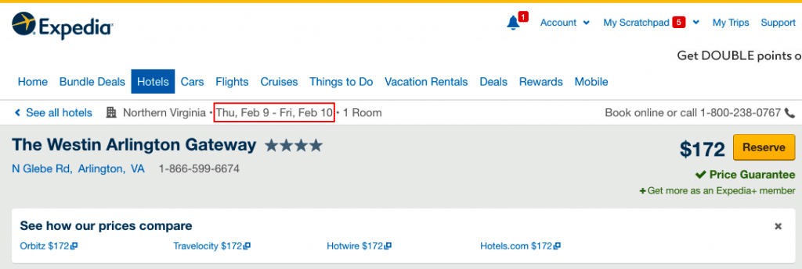
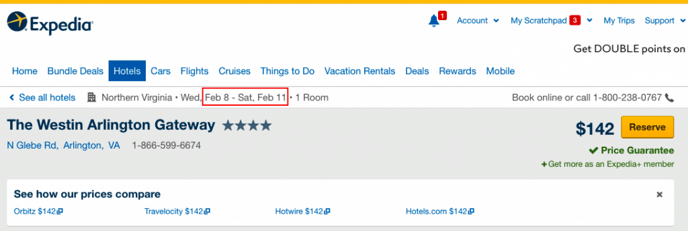

It costs $222 per night, or $444 for two nights. Expedia also displays prices from other brands such as Orbitz, Travelocity, Hotwire, Hotels.com. In this case, the rates are all the same. Should you go ahead to reserve the room with this rate? Not too quick. Let's check how much the hotel rate is for each individual night. Below are the results.

It turns out that the same room costs $229 for the first night, but only $172 for the second night. The total is $401 for two nights. Therefore, if you book those two nights separately, you can save $43, almost 10%. You may be wondering whether that's a big hassle to check-out and check-in in the middle of the second day. You don't have to. Just tell the front desk that you have two bookings when you check in the first time, they will merge the two bookings and keep you in the same room. So booking two nights separately is a better strategy than booking two nights together, at least in our case. Let's make this exercise more interesting. If you add another night and check the rates for 3 nights in a row, you will get the following result.
Staying at this hotel for 3 nights will costs your $142 per night, or $426 in total. So you can save $18 if you book one more night. Can you believe it? That's how dramatic the hotel rates are. It looks like this hotel is targeting for business travelers. During weekdays, the hotel has higher occupancy. Therefore, the nightly rate is higher. But if you are smart enough, you can book 3 nights, stay 2 nights for your business, check-out on the third-day and ask the hotel if they can give you any credit for cancelling the last night. Even if they won't give you anything back, you can still save $18. Or you may stay one more night for free to visit the Smithsonian museums, which are several metro stations away and also free. The bottom line is that you'd better try multiple combinations before you book a hotel for multiple nights. However, you may run out of your patience soon since number of combinations can grow quickly when you need to stay more nights and have multiple candidates to choose. Give FindOptimal.com a try! It can solve such a puzzle in several seconds.